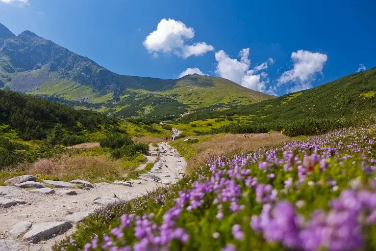

Góry bez tajemnic
Marzysz o ucieczce od miejskiego zgiełku i wszechobecnego pośpiechu? Chcesz spędzić czas z rodziną, oddając się odkrywaniu niezwykłych zakątków natury? A może szukasz wyjątkowego sposobu na aktywny wypoczynek i relaks? Polskie góry to idealne miejsce na spełnienie tych marzeń! Zarówno dla rodzin z dziećmi, jak i dla osób podróżujących samotnie, Polska oferuje bogactwo atrakcji, malownicze szlaki i niezapomniane widoki, które zostaną w Waszej pamięci na zawsze.
Polskie góry są doskonałym miejscem dla rodzin z dziećmi, które pragną spędzić aktywny czas na łonie natury. Liczne ośrodki wypoczynkowe, pensjonaty i agroturystyka oferują komfortowe warunki zakwaterowania oraz różnorodne atrakcje dla najmłodszych. Maluchy mogą cieszyć się spacerami po łagodnych szlakach, obserwując przyrodę i zwierzęta, bawiąc się na placach zabaw w górskich miejscowościach, czy uczestnicząc w warsztatach edukacyjnych.
Polskie góry słyną z bogactwa tras turystycznych, które przyciągają miłośników pieszych wędrówek z całego kraju i zagranicy. Niezależnie od poziomu zaawansowania, każdy znajdzie tutaj coś dla siebie. Od łatwych, rodzinnie przyjaznych szlaków, przez średnio wymagające trasy dla początkujących, aż po wyzwania dla doświadczonych wędrowców. Malownicze doliny, skaliste szczyty, tajemnicze lasy - polskie szlaki górskie zapewniają niezapomniane wrażenia i chwile kontaktu z naturą.
Wyjazd w polskie góry to nie tylko możliwość wypoczynku i relaksu, ale także szansa na przeżycie niezapomnianych przygód i odkrywanie nieznanego. Dla rodzin to doskonała okazja do spędzenia czasu razem, budowania więzi i dzielenia się radością z odkrywania nowych miejsc. Dla osób podróżujących samotnie - to szansa na odnalezienie spokoju, kontemplację natury i osobistą refleksję. Niezależnie od tego, czy wybierasz się na krótki weekendowy wypad, czy dłuższe wakacyjne wędrówki, polskie góry są gotowe na przyjęcie Ciebie i Twojej rodziny z otwartymi ramionami. Przygotuj plecak i ruszaj w drogę - przygoda czeka na Ciebie!
